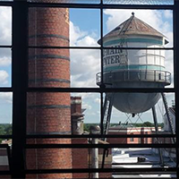

Neglia's spectacular productions filled with world-class dancing...
...rival any in the region. – Steve Sucato, Buffalo News
Neglia Ballet Artists is dedicated to enriching the region's cultural environment by building appreciation and support for the art of ballet. We are committed to preserving the artistry, technique, and traditions of ballet through high quality performance and superior instruction.
Our goal is to be the most vibrant, significant, and diverse professional ballet company in the region and a nationally recognized training center, with a reputation for identifying and nurturing young talent throughout all sectors of the community.
On January 28th, Neglia Ballet announced its upcoming move to the Tri-Main Center later this year. This is the biggest step in our 21 year history of bringing world-class ballet to Buffalo and we are looking forward to having a custom-designed space as our conservatory classes, outreach programs and performances continue to grow. To fund this move and all of its associated costs, we launched a Capital Campaign with a special soiree at the future home of Neglia Ballet on the sixth floor of Tri-Main Center.
Assemblyman Sean Ryan gave remarks at the event which included a sneak preview of plans for the new space for invited guests. Guests enjoyed wine, delicious catering donated by The Chocolate Bar, and live music played by Inga Yanoski, Robert Hausmann and Gregory Docenko while celebrating Neglia Ballet's past and future. It was the perfect way to kick off a year of huge changes for our company and conservatory!
Our new home will feature three spacious studios allowing us to expand and diversify conservatory programming and accommodate the production of more professional performances. The space also includes three dressing rooms, a spacious welcome center, a Neglia store where students can purchase dancewear, and a wellness room for dancer cross-training.
As exciting as our plans are, they can only come to fruition with your help. Visit the Capital Campaign page to learn how you can help us build a world-class studio for world-class ballet!
A few photos from our Soiree for Ballet
launch party.